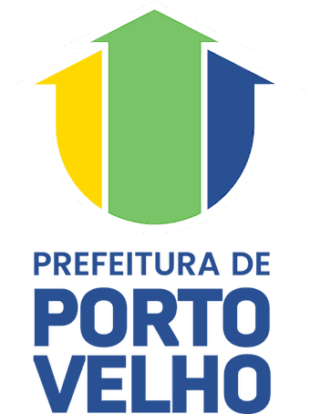

Observatório SUAS Sistema Único de Assistência Social · Porto Velho
Reunimos num só lugar o que o município sabe sobre a sua rede de assistência social: quantas famílias são acompanhadas, onde estão os serviços, como se distribuem os benefícios e o que os indicadores mostram ao longo do tempo. Tudo em painéis abertos, feitos para serem consultados por gestores, conselheiros e por qualquer cidadão.

—
áreas do SUAS
—
previstos
Do registro do atendimento ao painel
-
01 DGSUAS
Coleta
Reunião dos registros das unidades e dos sistemas oficiais que alimentam a gestão do SUAS no município.
-
02 DGSUAS
Mineração e tratamento
Extração, limpeza e conferência dos dados, resolvendo inconsistências antes de qualquer publicação.
-
03 DPEI
Armazenamento e pipeline
Armazenamento, estruturação das bases e montagem do pipeline que mantém os dados atualizados.
-
04 DPEI
Painéis e publicação
Criação e publicação dos dashboards em Tableau, além da manutenção deste site.
Os painéis trazem apenas dados agregados, sem qualquer informação que identifique pessoas, em conformidade com a LGPD. O acesso é livre e não exige cadastro.
Temas e painéis
Cada tema reúne os painéis publicados pela SEMIAS. Clique para abrir dentro do Observatório — ou pressione Ctrl K e digite o nome.
Nenhum tema neste eixo.
Painel
Carregando painel…
O painel está demorando para carregar.
A conexão pode estar lenta ou o Tableau indisponível no momento.
Painel ainda não publicado
Este painel já está previsto na estrutura do Observatório, mas o endereço do Tableau ainda não foi informado.
Para publicá-lo, adicione o link em assets/js/catalogo.js.
Painel não encontrado
O endereço pode ter mudado ou o painel foi removido. Procure pelo tema no menu ou volte ao início.
Voltar ao início